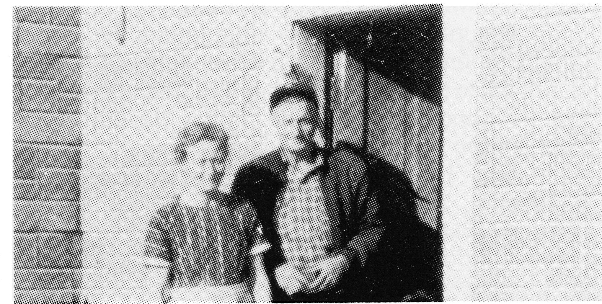

WILFRID L'HEUREUX
On March 20, 1900 Wilfrid was born at Jackfish, Saskatchewan where he spent his boyhood years and received his schooling at St. Michel's school.
In his younger days, he was a very proud and daring type, thus becoming his father's favorite. Because of this, he became chauffeuer for his Dad from the time they first got an automobile. This involved accompanying Father on cattle selling trips to Saskatoon and Winnipeg, thereby learning to socialize with the buyers and also learning to nibble at the sauce. Wilfrid grew to like this a great deal.

At eighteen years old he went to North Battleford. He always had the ambition to join the army and his brother Paul, overseas, as soon as he became of age. However, the ending of the First World War kept him in the Battlefords instead, where he became a taxidriver for Leo Manegre for a short period of time.
During that period, one incident he often reminisced about was when he drove a patient to the North Battleford asylum. While delivering the patient's suitcase, he was proceeding through the dining hall where female patients were cleaning up. One lady dropped her mop, pointed at Wilfrid and screamed "There's the man who stole my suitcase!" Being very nervous in this environment as it was, he dropped the suitcase, ran to his car and sped back to town. Needless to say, he never collected the fare for this trip!
By fall, Wilfrid had had enough of this city life. He teamed up with another cowboy friend of his and together they decided to ride horseback to the West Coast. When they reached the foothills and two feet of snow, the sight of those huge mountains discouraged them enough to turn and head for home.
Back at the ranch, he continued to herd cattle for his father.
In 1923, he met Marguerite Lavoie, who had come out west with her parents and family from the Gaspe Peninsula in Quebec. They were married on January 14, 1924, and moved to a district called Eagle Hills, where, for a year, they herded cattle for a local rancher. During that period, Marguerite gave birth to twins who both passed away that same year.
In 1925, Wilfrid decided to move back to Jackfish where, in an exchange of land with his brother, George, he homesteaded a quarter section of land and rented another quarter section from the CPR; this land was but three miles from the main ranch.
Throughout the years, they lived and farmed there and brought five of their six children into the world: Lloyd, Yvette, Colette, Camile and Roland.
In those days they followed the stampede Circuit in Saskatchewan, as Wilfrid was a pretty fair rider. After getting badly hurt a few times, he quit riding. He continued to follow the stampede trail with a remarkably trained bronco called Dewey. Dewey brought Wilfrid a fair bit of fame. He had tried to train him as a saddle horse but Dewey persistently bucked him off. Eventually, he became a pet around the yard. Lloyd rode him anywhere with no saddle or bridle, just neck-reining. But when Dewey came in range of a stampede corral, he was transformed into a wild and bucking bronco. He would come out of the chute, jump up in the air and come down on all fours with a solid jolt that would, literally knock the bejeesus out of his rider. Dewey was never ridden the full eight seconds as required in stampedes.
Dewey eventually died of old age on the farm remaining always a favorite in the community.
Wilfrid's last ride as a cowboy came about at the Medstead Stampede in 1932 when his horse fell over backwards on him and he had to be pulled out from under by the pickups. The broken nose he received in this fall took on a Roman look and became a very characteristic feature of his appearance.
Wilfrid was very mechanically inclined from his experiences driving and maintaining the family automobile. He became quite proficient in operating all types of machinery. He and his brother, George, bought a Twin-City gas tractor and threshing machine which was one of the first brought into Jackfish. They custom-threshed for surrounding farmers until the beginnning of World War II.
In 1939, he moved his family close by Jackfish Creek, on the old Hays' place, making St. Micheal's School more accessible to the children.
When the War broke out, Wilfrid's old army itch reappeared.
He held an auction sale and moved his family to Highgate, where they were close to Maggie's sister, Kate and to the school. He then went to Windsor, Ontario with his oldest son Lloyd. Here they both obtained employment. Wilfrid was still not happy-so he followed his itch and arrived home in the uniform of the RCEME (Royal Canadian Electrical Mechanical Engineers). Lloyd joined the Navy and never did see his father in uniform.
Because of his mechanical experience, Wilfrid was sent overseas immediately and because of his age, he remained in England during the hostilities, the last three years of which he spent touring southern England with a lieutenant and a mechanic doing spot inspections on military equipment.
Returning home in 1945, he applied for and was granted by DVA an untouched section of land. This land was three miles southwest of Jackfish where he proceeded to break and cultivate six hundred acres, raise his family and in 1947, add a bouncing baby girl named Aline.
Wilfrid was a workoholic but periodically, over the years, indulged in the other holic.
In 1958, when the first five children were grown and gone their separate ways, he decided to sell out and move closer to three of his children- Yvette, Colette and Camile in the Peace River country of Alberta.
Leasing a piece of land by Martin River, Alberta, he raised cattle and horses with his son, Camile. He enjoyed doing this until he retired to Peace River where he lived for a few years. He then purchased twenty acres of land with a home in the hamlet of Marie Reine, close to his daughter, Yvette and enjoyed life with his wife, Marguerite until she passed away on December 26, 1963.
Wilfrid sold the property in Marie Reine and moved to Peace River to live with his daughter Colette. Close by lived a good friend who was a farmer-contractor, Mickey Paranteau. Mickey enjoyed the benefits of Wilfrid's experience and let him please himself in his older days by working around the farm and on his contracts. He also let Wilfrid have the use of a cabin on the property where Wilfrid spent his leisure time. He bought himself a little car and travelled visiting friends and family. By this time, Wilfrid had suffered a very serious heart attack and was to take things very easy.
Returning from one of his jaunts, he visited Colette where he was to stay overnight but instead went back to the cabin at Mickey's. It was at this cabin that he passed away peacefully on November 11, 1969, ending a very full and fruitful life.
May he rest in peace by his lovely wife, Marguerite, and his Grandson, Serge, in the cemetary of Marie Reine, Alberta.
Wilfrid L'Heureux
| NAME | BORN | MARRIED | SPOUSE | BOY | GIRL | DIED |
|---|---|---|---|---|---|---|
| Wilfrid | Mar. 20, 1900 | Jan. 14, 1922 | Marguerite Lavoie | 3 | 3 | Nov. 10, 1969 |
| Marguerite | Dec. 26, 1965 | |||||
| WILFRID'S FAMILY | ||||||
| Lloyd | Oct. 21, 1925 | July , 1945 | Aline Lafleur | 2 | 0 | |
| Remarried | July , 1966 | Frances Dancoisne | 2 | 3 | ||
| Yvette | Apr. 26, 1930 | Sept. 10, 1949 | Meride Lavoie | 2 | 5 | |
| Colette | Oct. 14, 1932 | May 21, 1953 | Wilfrid McCaffrey | 4 | 2 | |
| Camile | Nov. 11, 1934 | Dec. 28, 1955 | Donna Washbrook | 5 | 0 | |
| Roland | Sept. 7, 1938 | Apr. 28, 1962 | Juliette | 0 | 2 | |
| Remarried | Aug. 3, 1968 | Doris Gagnon | 1 | 0 | ||
| Aline | Apr. 8, 1949 | Apr. 29, 1968 | Clive Jones | 2 | 1 | |
| Twins | , 1923 | , 1923 | ||||
| Jules | , 1929 | |||||
| Wilfrid's Grandchildren | ||||||
| LLOYD'S FAMILY | ||||||
| Marc | Jan. 22, 1949 | Louise | 2 | 2 | ||
| Serge | July 16, 1952 | Danielle | 1 | Oct. 26, 1980 | ||
| Nicole | Jan. 9, 1968 | |||||
| Quiyon | July 27, 1970 | |||||
| Charmaine (step) | Sept. 16, 1954 | Wesley Roe | 1 | 1 | ||
| Gary (step) | Sept. 17, 1956 | Oct. 3, 1982 | ||||
| Nadine (step) | Aug. 15, 1961 | |||||
| Wilfrid's Great Grandchildren | ||||||
| Lloyd's Grandchildren | ||||||
| MARC'S FAMILY | ||||||
| Sophie | May 30, 1974 | |||||
| Martin | Mar. 14, 1976 | |||||
| Bridgette | June 16, 1977 | |||||
| Herve | June 15, 1979 | |||||
| SERGE'S FAMILY | ||||||
| Sabastien | July 15, 1977 | |||||
| CHARMAINE'S FAMILY | ||||||
| Neil | July 26, 1978 | |||||
| Amanda | May 4, 1980 | |||||
| Wilfrid's Grandchildren | ||||||
| YVETTE'S FAMILY | ||||||
| Clemence | June 5, 1950 | July 11, 1969 | Brian Johnson | 1 | 1 | |
| Joanne | June 20, 1952 | June 22, 1985 | Tim Kelly | 2 | 0 | |
| Francoise | Mar. 9, 1954 | Oct. 28, 1972 | Henry Roznicki | 2 | 2 | |
| Louise | July 1, 1956 | Apr. 19, 1981 | Frank Vidic | 1 | 1 | |
| Raymond | Oct. 28, 1958 | |||||
| Phillip | Nov. 28, 1962 | |||||
| Michelle | May 24, 1964 | Oct. 6, 1984 | Steve Tidridge | 1 | 1 | |
| Wilfrid's Great Grandchildren | ||||||
| Yvette's Grandchildren | ||||||
| CLEMENCE'S FAMILY | ||||||
| Robby | Oct. 3, 1969 | |||||
| Jennefer | Mar. 21, 1975 | |||||
| JOANNE'S FAMILY | ||||||
| Jenna | Feb. 2, 1980 | |||||
| Jordie | June 12, 1986 | |||||
| FRANCOISE'S FAMILY | ||||||
| Stewart | Feb. 27, 1973 | |||||
| Charity | Nov. 24, 1974 | |||||
| James | Nov. 15, 1977 | |||||
| Cynthia | July 14, 1979 | |||||
| LOUISE'S FAMILY | ||||||
| Vanessa | Oct. 1, 1981 | |||||
| Kyle | Jan. 31, 1984 | |||||
| MICHELLE'S FAMILY | ||||||
| Trevor | Sept. 5, 1985 | |||||
| Wilfrid's Grandchildren | ||||||
| COLETTE'S FAMILY | ||||||
| Wilfrid | Apr. 4, 1954 | June 2, 1979 | Debbie Derouin | |||
| Robert | Apr. 6, 1955 | Nov. 19, 1980 | Janice Larson | 0 | 1 | |
| Janet | May 16, 1956 | June 15, 1973 | Tom Boychuk | 1 | 1 | |
| Carol | Dec. 3, 1959 | |||||
| Jim | June 2, 1961 | |||||
| Barry | July 13, 1962 | |||||
| Wilfrid's Great Grandchildren | ||||||
| Colette's Grandchildren | ||||||
| ROBERT'S FAMILY | ||||||
| Amy-Jean | July 17, 1984 | |||||
| JANET'S FAMILY | ||||||
| Michael | Nov. 24, 1973 | |||||
| Lea Anne | Feb. 26, 1975 | |||||
| Wilfrid's Grandchildren | ||||||
| CAMILE'S FAMILY | ||||||
| Camile Jr. | June 7, 1956 | June 21, 1975 | Sherry Verhoeven | 2 | 0 | |
| Richard | Sept. 14, 1957 | |||||
| Neil | Dec. 7, 1958 | Dec. 12, 1981 | Janet Eckel | 0 | 1 | |
| Marc | Nov. 11, 1961 | Oct. 14, 1981 | Marnie Boyer | 1 | 1 | |
| Lennie | Jan. 18, 1965 | |||||
| Wilfrid's Great Grandchildren | ||||||
| Camile's Grandchildren | ||||||
| CAMILE JR.'S FAMILY | ||||||
| Jeff | Oct. 25, 1975 | |||||
| Kyle | Apr. 16, 1983 | |||||
| NEIL'S FAMILY | ||||||
| Stacey | Nov. 20, 1983 | |||||
| MARC'S FAMILY | ||||||
| Marc | May 25, 1982 | |||||
| Monique | Jan. 2, 1984 | |||||
| Wilfrid's Grandchildren | ||||||
| ROLAND'S FAMILY | ||||||
| Gisselle | June 3, 1963 | |||||
| Claudette | Dec. 15, 1965 | |||||
| Garnet | Sept. 16, 1974 | |||||
| ALINE'S FAMILY | ||||||
| Norman | Apr. 19, 1969 | |||||
| Daren | May 14, 1972 | |||||
| Tera Lyn | Jan. 2, 1977 | |||||
| TOTAL DESCENDANTS | 90 |
| LIVING | 83 |
| DECEASED | 7 |